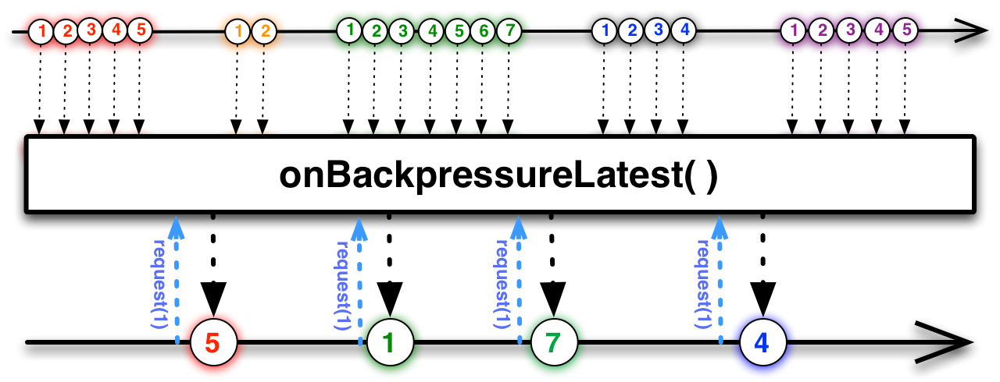
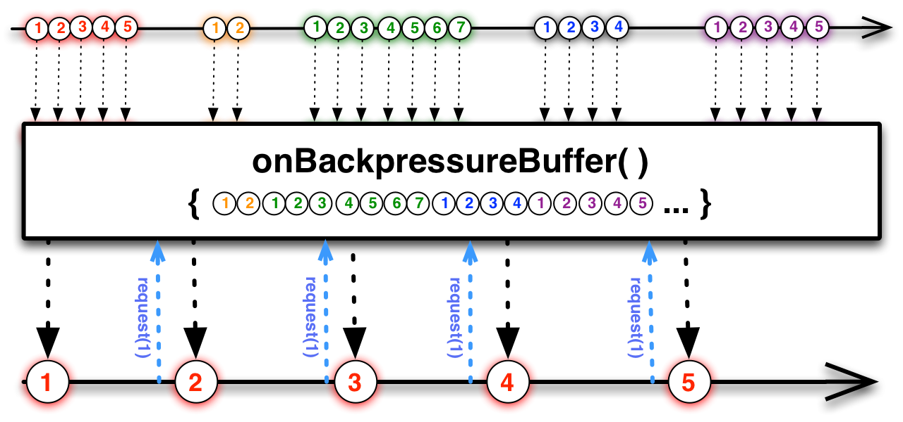
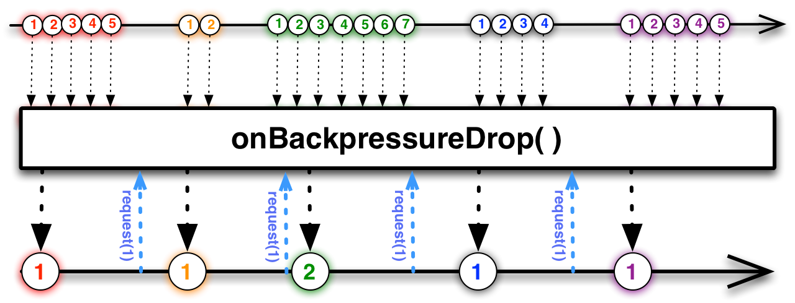

From RxJava to Kotlin Flow: Backpressure
Disclaimer This article unfortunately is not that dive deep (because of complexity of internals of coroutines), but instead trying to compare RxJava and Kotlin Flow mostly as black box with trying to find out differences in behavior and how to migrate from RxJava with its backpressure solution to Kotlin Flow. Hopefully this article will give you direction on where to look at if you decide to migrate to Kotlin Flow.
This is somewhat continuation to previous article about comparison of RxJava and Kotlin Flow. If you haven’t read previous article you can find it here: From RxJava 2 to Kotlin Flow: Threading

Introduction⌗
Backpressure is a term in reactive streams which describes the behavior when consumer is not consuming events that fast as producer produces them. Not having backpressure might lead to either blocking you code (if consumer blocks until takes next event) or OutOfMemoryErrors (if producer caches its events for consumer). RxJava is known for its first class support for backpressure. Kotlin Flow also has some solutions for that problem. In this article we’ll try to compare solutions and find out what one should pay attention to to successfully migrate from one library to another.
RxJava Backpressure⌗
In RxJava there are a lot of reactive types (Observable, Single etc.), but only Flowable is a type which supports backpressure in RxJava. It is supported via Subscriber interface:
public interface Subscriber<T> {
public void onSubscribe(Subscription s);
public void onNext(T t);
public void onError(Throwable t)
public void onComplete();
}
The main thing about backpressure is inside Subscripion interface:
public interface Subscription {
public void request(long n);
public void cancel();
}
Particularly request method. Whenever downstream is able to consume more events, it sends request to upstream providing number of events it is able to consume.
So, basic communication is the following:
on subscribe downstream requests some number of events (say 1)
upstream receives that request and produces next event
when downstream receives event it can request upstream to more events
This is how backpressure is supported: if downstream not requested events, producer should stop producing events. If some backpressure strategy is applied and producer is able to emit new item and consumer is not able to consume it, then producer might discard some values or buffer them.
This might be considered as communication from bottom to top of the chain to tell the upstream whether or not to emit values, and (based on backpressure strategy) apply some rules on values which are no ready to be emitted to consumer.
Kotlin Flow Backpressure⌗
In Kotlin Flow everything is more complicated, as there is no direct communication from downstream to upstream. What is Kotlin Flow backpressure is based on is suspension. When downstream is suspended (or doing some work) upstream might identify that and not produce items.
Comparison setup⌗
In order to make a comparison we’ll make some setup. First of all we’ll make some helper functions which describe some work in progress (like loading some data from network).
For RxJava it will be blocking:
private fun doWorkBlocking(i: Int, delay: Long): Int {
Thread.sleep(delay)
return i
}
And for Koltlin Flow suspending:
private suspend fun doWorkDelay(i: Int, timeout: Long): Int {
delay(timeout)
return i
}
Next we’ll create some upstreams which produce some events with predefined delay.
For RxJava:
private fun flowable(
delay: Long,
mode: BackpressureStrategy,
limit: Int
): Flowable<Int> = Flowable
.create<Int>(
{ emitter: FlowableEmitter<Int> ->
for (i in 1..limit) {
Thread.sleep(delay)
emitter.onNext(i)
}
emitter.onComplete()
},
mode
)
And for Kotlin Flow:
private fun flow(
timeout: Long,
limit: Int
): Flow<Int> = flow {
for (i in 1..limit) {
delay(timeout)
emit(i)
}
}
For these functions we’ll have streams which emit limit + 1 items with timeout delay between each event.
Next we’ll have our test functions which we’ll use to verify output and print some time needed to produce that output (not for benchmark purposes, but to see that time is relatively equal).
For RxJava it will be:
private fun testFlowable(
mode: BackpressureStrategy,
limit: Int = 10
) {
val latch = CountDownLatch(1)
val stringBuffer = StringBuffer()
val time = System.currentTimeMillis()
flowable(delay = 100, mode = mode, limit = limit)
.subscribeOn(Schedulers.io())
.observeOn(Schedulers.computation(), false, 1)
.map { doWorkBlocking(i = it, delay = 200) }
.map { doWorkBlocking(i = it, delay = 300) }
.doOnComplete { latch.countDown() }
.subscribe {
stringBuffer.append("$it ")
}
latch.await()
println((System.currentTimeMillis() - time))
println(stringBuffer.toString())
}
For Kotlin Flow:
private fun testFlow(limit: Int = 10, onBackpressure: Flow<Int>.() -> Flow<Int>) {
val latch = CountDownLatch(1)
val time = System.currentTimeMillis()
val stringBuffer = StringBuffer()
CoroutineScope(Job() + Dispatchers.Default).launch {
flow(timeout = 100, limit = limit)
.flowOn(Dispatchers.IO)
.onBackpressure()
.map { doWorkDelay(i = it, timeout = 200) }
.map { doWorkDelay(i = it, timeout = 300) }
.onCompletion { latch.countDown() }
.collect {
stringBuffer.append("$it ")
}
}
latch.await()
println((System.currentTimeMillis() - time))
println(stringBuffer.toString())
}
As seen above we’ll have our upstream to produce item each 100ms with processing them sequentially with 200ms and then 300ms.
With such setup we expect that (as for consumer it takes about 500ms to process result) that not all events will be consumed.
Backpressure Latest⌗
Backpressure Latest is a strategy which discards any item while consumer is still busy while keeping the latest item from producer:
Source
{kind=link}
For RxJava in our test will have to run:
testFlowable(LATEST)
For Kotlin Flow the equivalent is:
testFlow { conflate() }
The produced results will be somewhere:
1759
1 5 10
Backpressure Buffer⌗
Backpressure buffer is a strategy where upstream buffers items until they are consumed by consumer.
Source
{kind=link}
For RxJava our test will look like:
testFlowable(BUFFER)
And for Kotlin Flow it will be:
testFlow { buffer() }
The result of execution will be printed somewhat like:
5114
1 2 3 4 5 6 7 8 9 10
And that’s expected: all the items are buffered and consumer is able to consume all items when it is ready.
Backpressure Drop⌗
Next strategy is Drop. In this case (similarly to Latest) producer will discard all items consumer is not able to consume with exception that latest item will not be kept:
Source
{kind=link}
For RxJava we’ll use:
testFlowable(DROP)
With Kotlin flow it would be more difficult. There is no ready to use operator. I’ve asked on Stackoverflow and with help of Dávid Karnok we now have some implementation for this strategy.
UPDATE: after various discussions in comments, in StackOverflow etc. seems the most straightforward implementation for drop is:
fun <T> Flow<T>.onBackpressureDrop(): Flow<T> {
return channelFlow {
collect { offer(it) }
}.buffer(capacity = 0)
}
This is a combination of offer method over channel which drops values if there is suspension, and buffer with capacity of 0, which suspends on each item received.
See answers here: Kotlin Flow onBackpressureDrop RxJava2 analog
With that answer in mind we can write something like:
testFlow { onBackpressureDrop() }
And the result will be:
1104
1 6
flatMap⌗
So far so good. We were able to find exact replacements to each backpressure strategy of RxJava in Kotlin Flow. Though let’s modify our test sample a bit with including flatMap operator in it.
For RxJava:
private fun testFlowable(
mode: BackpressureStrategy,
limit: Int = 10
) {
val latch = CountDownLatch(1)
val stringBuffer = StringBuffer()
val time = System.currentTimeMillis()
flowable(delay = 100, mode = mode, limit = limit)
.subscribeOn(Schedulers.io())
.observeOn(Schedulers.computation(), false, 1)
.map { doWorkBlocking(i = it, delay = 200) }
.flatMap {
Flowable.just(it)
.map { doWorkBlocking(i = it, delay = 300) }
}
.doOnComplete { latch.countDown() }
.subscribe {
stringBuffer.append("$it ")
}
latch.await()
println((System.currentTimeMillis() - time))
println(stringBuffer.toString())
}
And for Kotlin Flow:
private fun testFlow(limit: Int = 10, onBackpressure: Flow<Int>.() -> Flow<Int>) {
val latch = CountDownLatch(1)
val time = System.currentTimeMillis()
val stringBuffer = StringBuffer()
CoroutineScope(Job() + Dispatchers.Default).launch {
flow(timeout = 100, limit = limit)
.flowOn(Dispatchers.IO)
.onBackpressure()
.map { doWorkDelay(i = it, timeout = 200) }
.flatMapMerge {
flowOf(it)
.map { doWorkDelay(i = it, timeout = 300) }
}
.onCompletion { latch.countDown() }
.collect {
stringBuffer.append("$it ")
}
}
latch.await()
println((System.currentTimeMillis() - time))
println(stringBuffer.toString())
}
Our expectation is that nothing should be changed, as we’ve just made flatMap over statically done map. But the results will be the following. For RxJava:
// LATEST
1734
1 6 10
// BUFFER
5114
1 2 3 4 5 6 7 8 9 10
// DROP
1106
1 6
And for Kotlin Flow:
// LATEST
1785
1 3 5 7 9 10
// BUFFER
2426
1 2 3 4 5 6 7 8 9 10
// DROP
1429
1 3 5 7 9
We see that result for RxJava is still the same and for Kotlin Flow it is now different. The reason about that is that each RxJava operator supports backpressure (because each operator creates new Flowable) when in case of Kotlin Flow you can add backpressure only between two operators.
Conclusion⌗
Though both RxJava Flowable and Kotlin Flow support backpressure there are still differences. Mostly these differences are based on the thing that RxJava has built-in support for backpressure which works from bottom to top (downstream is able to tell upstream when it needs more values) while Kotlin Flow backpressure is based on the suspension mostly.
While migration from RxJava to Kotlin Flow pay additional attention to the places where you use Flowables and backpressure and test thoroughly to not have some unexpected behavior.
Happy coding.